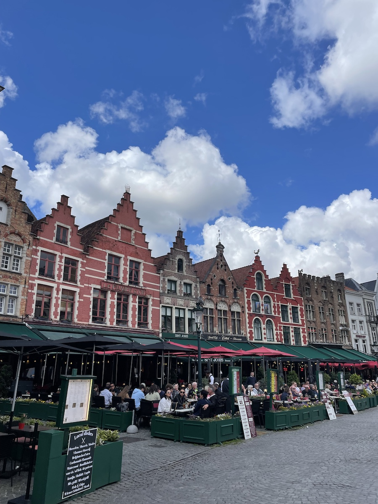
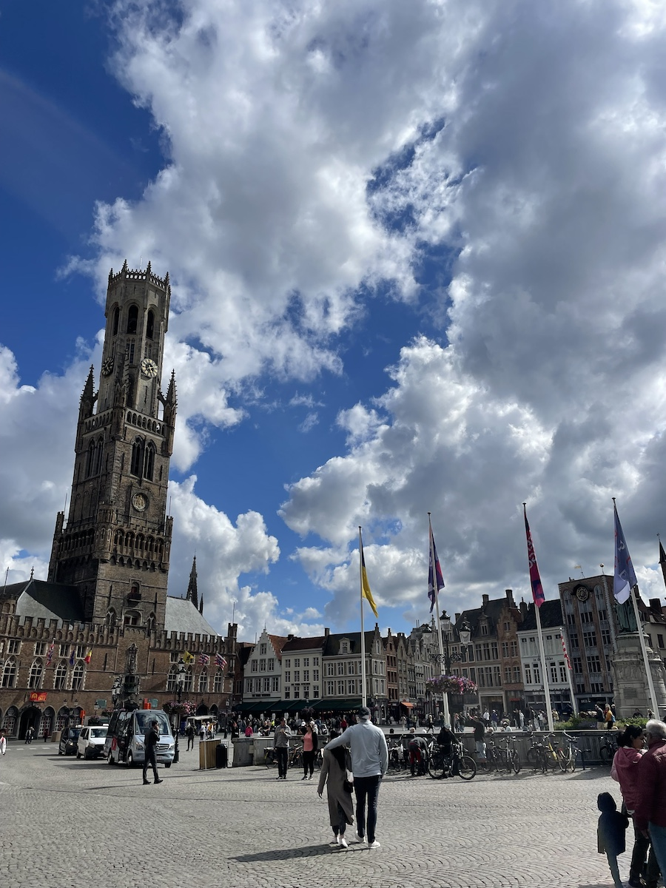
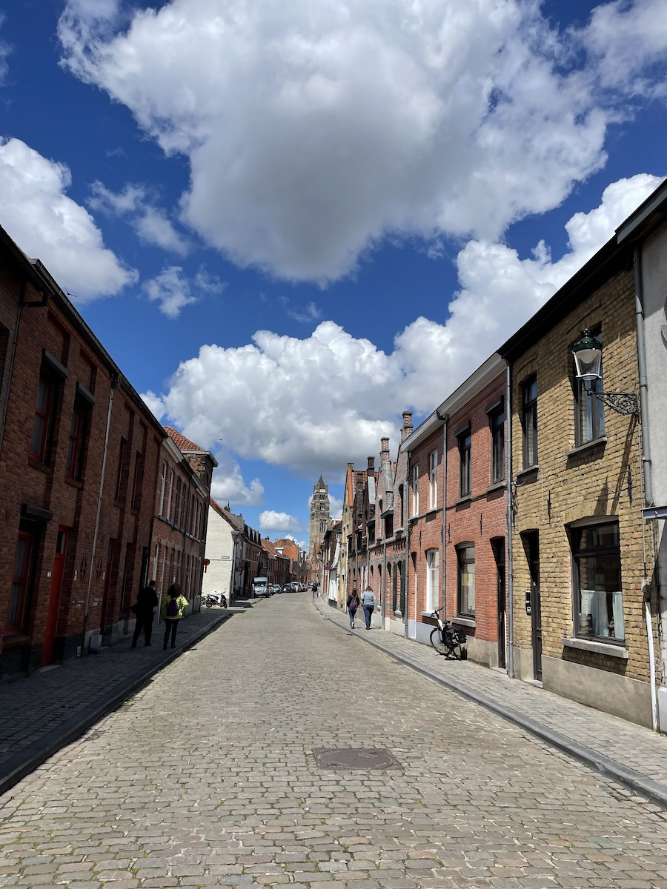
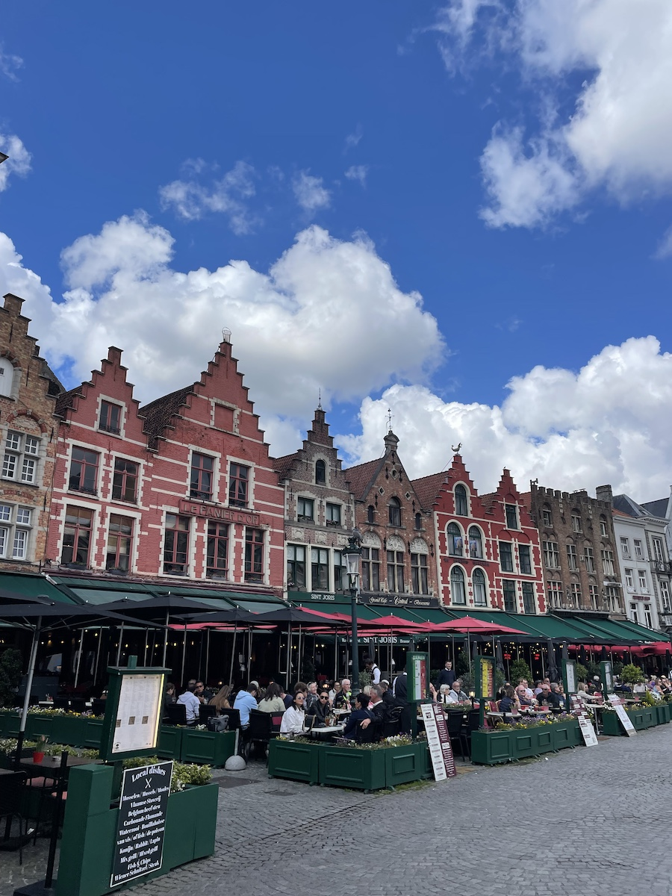
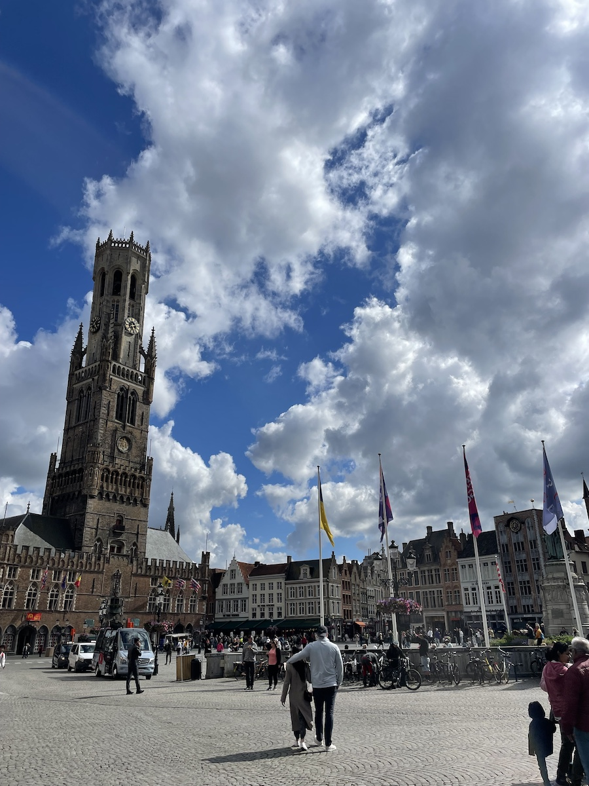
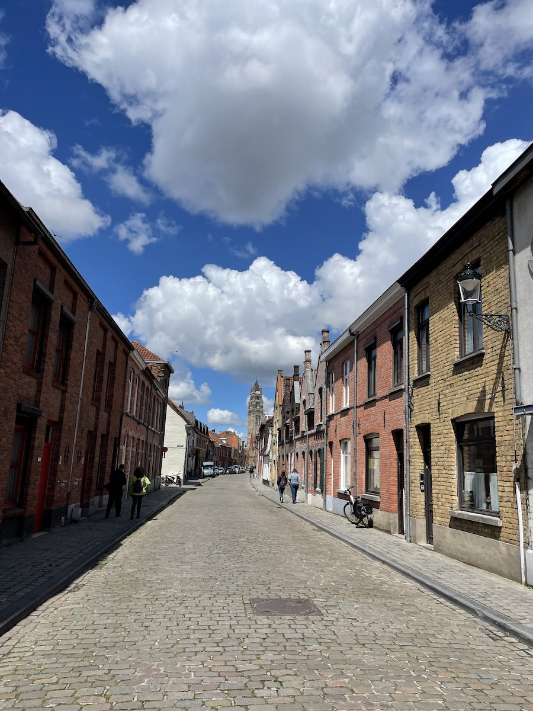

Brussels, Belgium


Horizontal scroll to view a few images from my trip!
Activities
- Mannekinpis Statue
- Grand Palace
- Taste test chocolate!
- Just walked around and explored
Food
Brugge, Belgium
 






Horizontal scroll to view a few images from my trip!
Activities
- Da Markt Square
- Walk around the town!